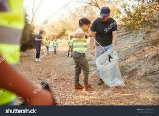

Get Involved in Cleaning Initiatives
At Pfarelo Projects, we believe that change starts with individuals coming together to make a difference. Our cleaning initiatives provide opportunities for people like you to actively participate in our mission to clean up the environment and protect our planet for future generations.
Here are several ways you can get involved:
1. Join a Cleanup Event:
Participate in our scheduled cleanup events in your local area or join our global initiatives. These events are a hands-on way to make an immediate impact by picking up litter, removing debris from natural spaces, and restoring the beauty of our surroundings. Check our Events Calendar for upcoming cleanup dates and locations.

2. Organize Your Cleanup:
Are you passionate about cleaning up a specific area in your community? We encourage individuals and community groups to organize their cleanup events. We can provide guidance, supplies, and support to help you get started. Contact our Community Engagement Specialist to learn more about hosting your cleanup
3. Donate to Support Our Initiatives:
If you're unable to participate in cleanup events but still want to contribute, consider making a donation. Your financial support helps us acquire necessary equipment, organize events, and expand our reach. Every contribution, no matter the size, makes a significant impact.
4. Spread Awareness:
Help us raise awareness about the importance of responsible waste disposal and environmental conservation. Share our mission and initiatives on social media, and encourage your friends and family to get involved. The more people who know about our cause, the greater our collective impact.

5. Volunteer Your Skills:
We're always in need of volunteers with a variety of skills, from web design and marketing to event planning and data analysis. Your expertise can help us operate more efficiently and reach a wider audience. Contact us to discuss how you can lend your skills to our cause.
6. Corporate Partnerships:
If you represent a business or organization, consider forming a corporate partnership with us. Collaborative efforts can lead to large-scale cleanup events, educational programs, and community engagement initiatives. Contact our Partnerships Coordinator to explore collaboration opportunities.
7. Educational Outreach:
Join our efforts to educate the community about the environmental impact of trash pollution. We offer educational workshops, presentations, and materials that you can share with schools, community centers, and local organizations.
Join Us in Our Journey
Pfarelo Projects invites you to join us in our journey towards a cleaner and healthier planet. Whether you're an individual looking to volunteer, a business interested in corporate partnerships, or a donor eager to support our cause, there's a place for you in our community.
Together, we can turn the tide against trash pollution and create a world where future generations can enjoy the beauty of a pristine environment. Thank you for being part of the Pfarelo Projects family.
Together, We Make a Difference
By participating in our cleaning initiatives, you become an essential part of the solution. Your actions contribute to cleaner, healthier environments and a brighter future for our planet. Join us today in our commitment to protect and preserve the natural world for generations to come.
Ready to get involved? Contact Us or check our Events Calendar for upcoming opportunities to join our cleaning initiatives.